이 글은 전체 2편 중 1편입니다. 긴 영상을 주제 흐름에 맞춰 나누어 정리했습니다.
채널: 월급만으로 부족해 | 길이: 43:54 | 날짜: 2026-09-30
이 글은 전체 2편 중 1편입니다. (약 0:00 ~ 22:12 구간을 다룹니다)
영상은 진행자가 대표에게 "사우나를 좋아하신다 그랬잖아요. 이거 사심 담으신 거예요?"라고 묻는 장면으로 시작한다. 대표는 웃으며 "그렇죠"라고 인정하고, "저 어제도 매일 밤 여기 있거든요. 저 보고 싶으시면 여기 오시면 돼요"라고 답한다. 이 대화는 가벼운 농담처럼 보이지만, 실제로 이 호텔의 핵심 경쟁력이 지하 대욕장이라는 점을 생각하면 오프닝 자체가 영상 전체의 복선이다.
이어서 영상은 본편 예고편 성격의 핵심 수치를 쏟아낸다. 2년 전 대비 거의 10배 이상의 성장률, 작년 매출 860억 원, 올해 1,500억 원 목표, "30평에 6,000만 원", "월세 200만 원대 초중반", "예상 매출 1,000만 원 이상 무조건", "오픈하고 나서 한 호실도 공실이 없었다", "100% 회전율", "규모가 작아도 된다", "극단적으로 두 객실만 있어도 호스텔이 가능하다", "공사는 한 달이면 끝난다"는 문장이 연속으로 배치된다. 이 중 상당수는 본편에서 다시 구체적으로 설명된다.
여기서 대표의 중요한 관점이 먼저 제시된다. "무한정 돈을 많이 들이면 누구나 멋있는 걸 만들 수 있거든요. 근데 사람들은 멋진 걸 원하는 게 아니에요."라는 발언이다. 즉 자본의 크기로 승부하는 것이 아니라, 제한된 공간에서 무엇을 배치해 얼마를 버느냐가 본질이라는 문제의식이 영상 초반에 이미 깔린다.
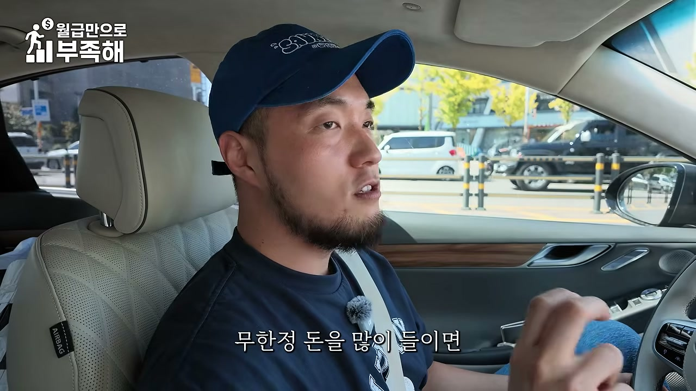
또한 "우리나라에 있는 가장 작은 대욕장을 보여드릴게요. 요 섹터에서만 세 개 하고 있어 지금"이라며, 대표가 이 영역에서만 3개 지점을 운영 중이라는 사실도 먼저 언급된다. '상권이 답이 없는 곳'에 대한 언급("답이 없는 데들")도 나오는데, 이는 뒤에서 종로·수도권·지방 상권 논의로 이어진다.
진행자가 사무실 앞까지 초대받은 이유를 묻자, 대표는 "오늘 뭐 호스텔 만드는 거 보고 싶다고 하셨잖아요"라고 답한다. 그리고 오늘의 동선이 "호스텔 → 사우나"로 이어진다는 것도 미리 예고된다. 대표는 "저 사우나 엄청 좋아하죠. 매일 가요. 전 사우나 러버입니다"라고 자기소개를 덧붙이고, PD의 인스타를 확인하지 않았다는 이야기 끝에 "저 요즘 사우나 콘텐츠만 하고 있는데"라고 근황을 밝힌다. 사업가이면서 동시에 사우나 콘텐츠를 올리는 인물이라는 캐릭터 설정이 이 단계에서 완성된다.
본격적인 자기소개는 이렇게 이루어진다. "저는 우리나라에서 중소형 숙박시설을 제일 많이 만들고 있는 정우석이라고 합니다." 진행자가 "제일 많이 만드셨어요?"라고 재확인하자 "제일 많이 만들고 있어요"라고 답한다. 이 '최다 시공'이라는 자기 규정은 뒤에서 250개·매출 860억·시공사 7위라는 숫자로 입증된다.
진행자는 호텔·모텔·에어비앤비 등은 들어봤지만 호스텔은 삶에서 처음 들어봤다며, "호스텔이 정확하게 어떤 건가요? 그냥 숙박시설인가요?"라고 묻는다. 이에 대한 대표의 설명이 이 영상에서 가장 중요한 개념적 토대다.
즉 호스텔은 모텔과 '종(種)' 자체가 다르며, 호텔과 같은 상위 분류 안에 속하는 별도 유형이다. 이 분류가 중요한 이유는 뒤에서 설명되는 용도변경의 용이성이 바로 이 분류 체계에서 나오기 때문이다.
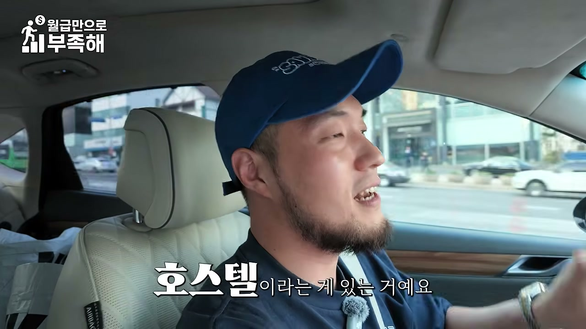
대표는 "왜 요즘에 그렇게 호스텔이 붐이냐"는 질문에 다음과 같이 답한다. 길거리에 있는 근생 건물이나 주택 건물을 숙박시설로 용도변경하고 싶다면, 상대적으로 가장 용도변경을 용이하게 할 수 있는 것이 관광숙박시설 중 호스텔이다. 구체적으로 세 가지 이유가 제시된다.
그래서 "대부분의 사람들이 근생을 숙박시설로 바꾸고 싶을 때 선택하는 용도가 호스텔"이 되었고, 이것이 붐의 정체라는 설명이다. 핵심은 수익성이 떨어지고 있는 근생이나 주택 건물을 숙박시설로 용도변경해서 수익률을 극대화시키고 싶은 시장의 니즈가 커지고 있다는 것이다.
진행자가 "우리나라 호스텔이 좀 많나요? 얼마나 있어요?"라고 묻자 대표는 정확한 수치를 제시한다.
즉 개체수로 보면 호스텔은 "많다"고 보기 어렵다. 그러나 결정적인 숫자는 따로 있다. 올해 호스텔 신규 증가분이 170개라는 점이다. 이는 2년 전 대비 거의 10배 이상의 성장률이다. 대표는 이 숫자를 통해 "열심히 이제 호스텔로 바꿀 수 있는 것들은 바꾸려고 노력들이 일어나고 있는 것"이며 "아예 트렌드가 좀 왔다"라고 규정한다.
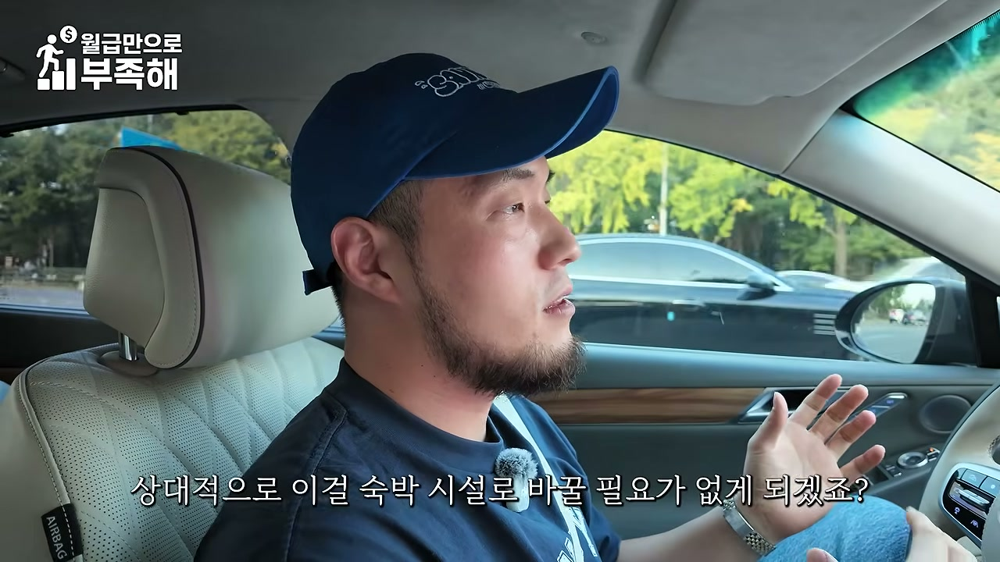
대표는 이 현상을 단기 유행이 아니라 수익형 부동산 시장의 구조적 순환으로 설명한다. 논리는 다음과 같다.
즉 호스텔 붐은 부동산 시장의 사이클이 만들어낸 결과물이며, 사이클이 바뀌면 판도도 바뀔 수 있다는 균형 잡힌 시각이 제시된다.
진행자는 "저같이 잘 모르는 사람들이 봤을 때는 숙박업 이퀄 내가 건물 지어야 한다, 이게 좀 확 박혀 있거든요"라고 말한다. 이에 대한 대표의 반박이 이 영상의 실질적 클라이맥스 중 하나다.
먼저 왜 모텔은 건물이 필요한가를 설명한다. 모텔은 건물 전체의 주인이 한 명이다. 그러므로 임대를 주더라도 건물 전체를 임대해야 한다. 임차인 입장에서는 시설투자 범위가 너무 커지고, 그 큰 시설비를 운영이익으로 회수하는 구도가 잘 나오지 않는다.
반면 호스텔은 다르다.
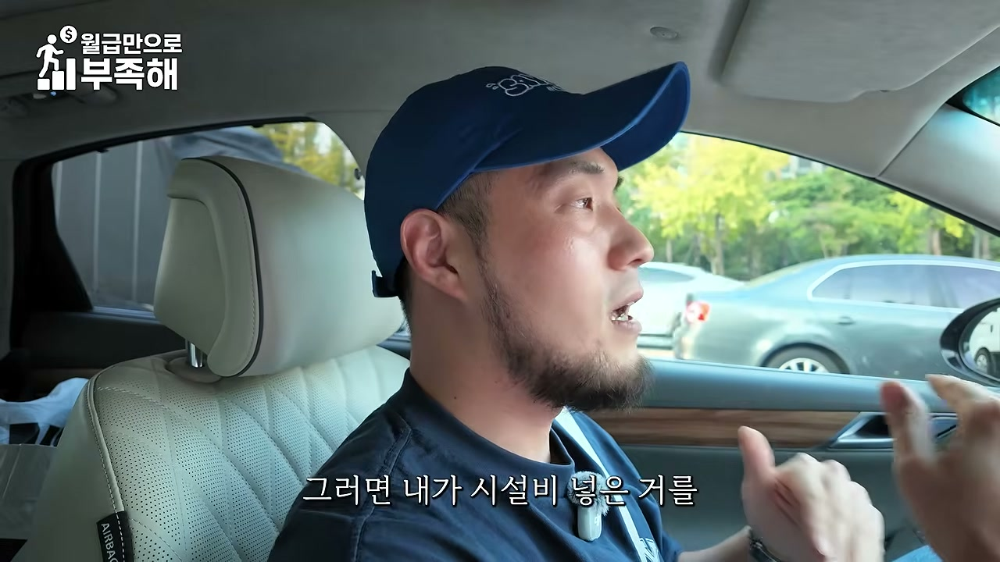
진행자가 "그러면 호스텔 하기 위해서는 자본금이 어느 정도 있어야 되나요?"라고 묻자, 대표는 "자본금을 얼마를 가졌냐에 따라서 내가 원하는 규모를 할 수 있다고 생각하시는 게 조금 더 정확해요"라고 답한다. 즉 정해진 최소 자본금이 있는 것이 아니라, 자본금이 규모와 꾸밈의 수준을 결정한다는 구조다.
대표는 실제 현장 사례를 하나 제시한다.
진행자가 "오, 너무 좋은데. 그럼 할 만하죠"라고 반응하자 대표는 "그게 이제 호스텔이에요"라고 정리한다. 이 사례는 앞서 말한 '2년 내 회수' 논리와 정확히 맞물린다. 월 4,500만 원의 현금흐름이면 1억 원의 시설투자를 2년 남짓에 회수할 수 있다는 계산이 성립한다.
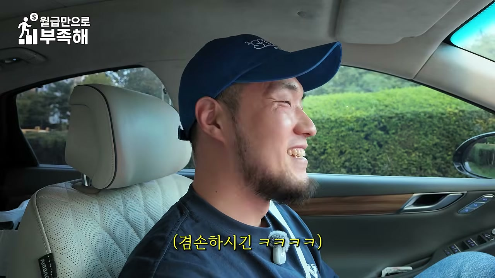
이어서 대표는 "그래서 에어비앤비 하시던 분들도 호스텔로 많이 들어오고, 일반 주부분들도 호스텔 시장으로 많이 들어오죠"라고 시장 참여자 구성을 설명한다. 진행자는 "저처럼 남자들보다 주부 여성분들이 훨씬 청소도 잘하시고 살림도 잘하실 거잖아요. 호스텔 운영에는 더 적합한 분들이라고 저는 생각해요"라고 말하고, 대표도 이에 동의하는 흐름이 만들어진다. 즉 호스텔은 자본 규모가 작아도 되고 운영 난이도가 생활 관리 중심이기 때문에, 기존의 에어비앤비 운영자나 주부 창업자에게 진입장벽이 낮은 사업이라는 시사점이 제시된다.
진행자가 "대한민국에서 중소형 호텔을 제일 많이 만드신 분이라고 소개하셨는데, 몇 개를 만드신 거예요?"라고 묻자 대표는 구체적 실적을 밝힌다.
진행자가 "860억이요?"라고 놀라자 대표는 담담하게 "네"라고 답한다.
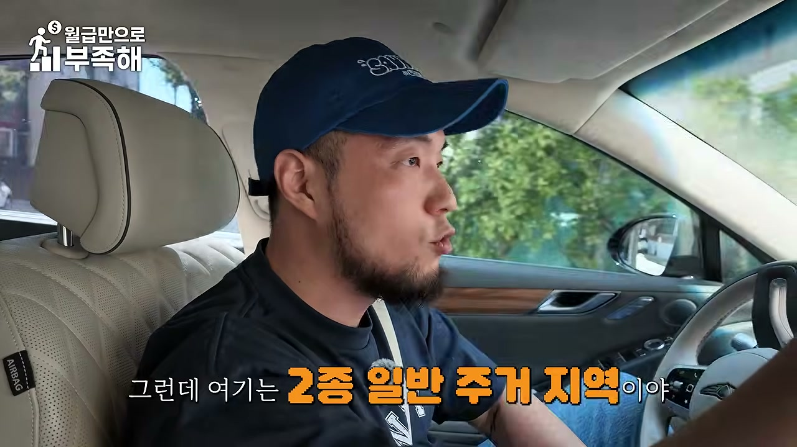
진행자는 "그렇게 많은 매출을 가지고, 중소형 호텔을 만드셨으면 더 큰 규모를 하실 거잖아요. 요즘 대표님은 왜 그쪽에 관심을 두고 움직이시는 거예요?"라고 질문한다. 이에 대한 답이 회사의 전략을 압축적으로 보여준다.
대표는 이 구조를 보면서 "우리가 나아가야 될 길이 뭐냐"를 고민했다고 말한다. 그리고 도출한 결론은 "1억짜리 공사도 할 수 있는 팀을 만들어야 된다"는 것이다. 그 이유는 명확하다. 소형 공사까지 소화할 수 있는 팀을 갖추면 자신들이 만드는 공간을 전국에 훨씬 더 빠르게 확장할 수 있기 때문이다. 최종적으로는 'K숙박의 스탠더드'를 만들어 보겠다는 비전으로 연결된다. 즉 대형 프로젝트 수주 경쟁이 아니라, 소형·다점포 확장을 통한 표준화가 이 회사의 전략이라는 점이 드러난다.
현장 설명은 역삼역 인근의 호텔에서 시작된다. 진행자가 위치를 묻자 대표는 "바로 조기(조기?) 앞에가 역삼이거든요. 역삼은 여기예요. 그러니까 상업지역이에요"라고 설명한다. 여기서 중요한 포인트는 원래 상업지역인 건물을 호스텔로 용도변경했다는 것이다. 대표는 "주거지역에도 만들 수 있는 호스텔로 용도 변경을 해서 이렇게 호텔을 만들었고"라고 말하며, 호스텔의 용도변경 용이성을 실제 사례로 입증한다.
여기서 결정적인 설계 판단이 공개된다. 원래 모텔 건물이었다면 400평에 30객실짜리 호텔을 만들 수 있다. 그러나 이 건물은 20객실로 만들었다. 그런데도 매출은 1억 8,000만 원이 나온다.
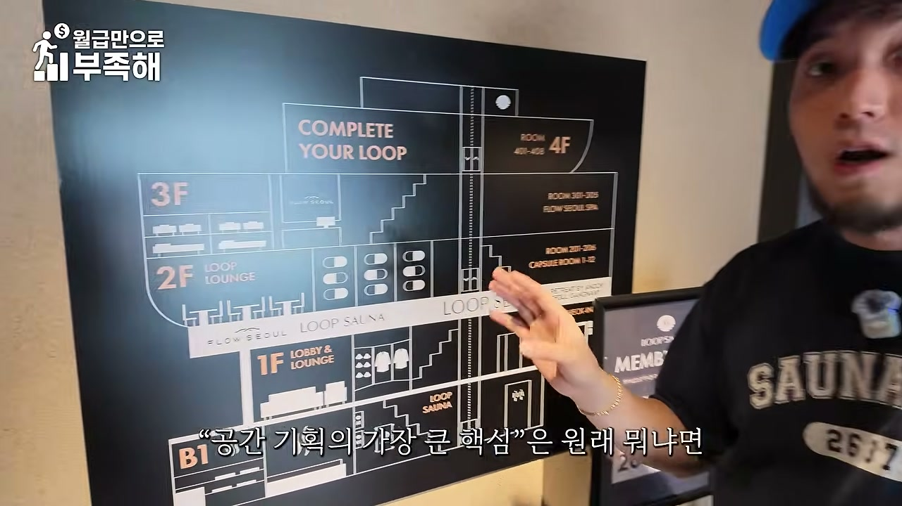
진행자는 "보통 우리가 생각했을 때 객실이 많으면 매출이 많이 나온다. 이게 국룰 아니에요?"라고 반문한다. 이에 대한 대표의 답이 공간 기획론의 핵심이다.
대표의 원칙이 여기서 명시된다. "공간 계획의 가장 큰 핵심은 같은 전용면적에서 가장 많은 돈을 벌게끔 만드는 것이 중요해요." 그리고 이 호텔의 컨셉은 "프라이빗한 고급 호텔에 오는 느낌"을 주는 것이다. 고급 호텔이라는 개념 안에는 반드시 부대시설이 있어야 한다는 것이 대표의 논리다.
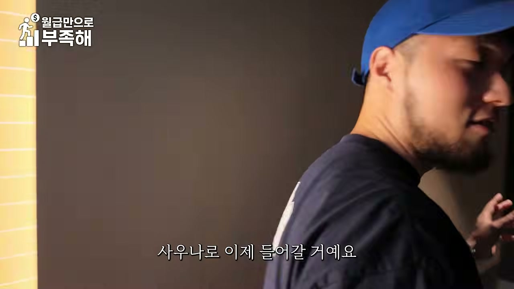
건물 구성은 다음과 같이 설명된다.
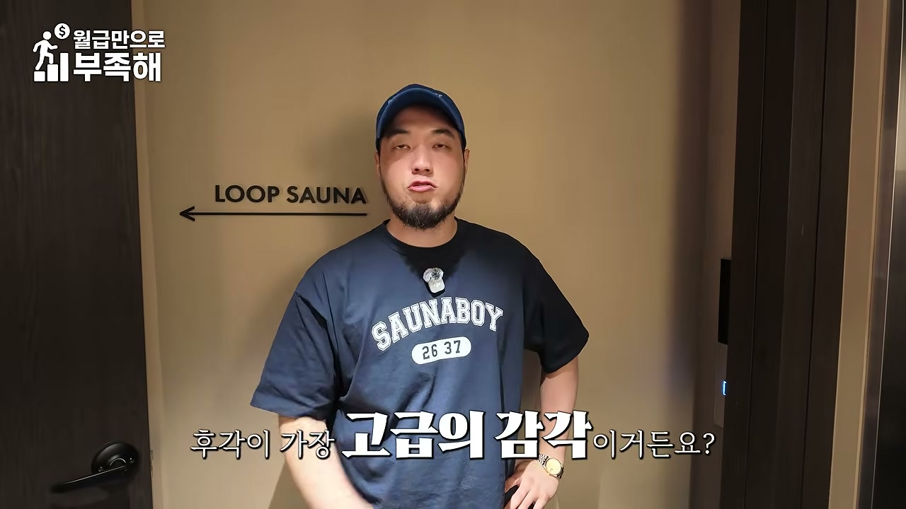
즉 "전체를 30객실로 만들 수 있는 건물의 크기지만 20객실만 만들고, 부대시설을 확실하게 투자해서 20객실에 있는 고객들이 훨씬 더 많은 객단가를 내고 가고 싶게 하는 호텔로 만들었다"는 것이 이 프로젝트의 요약이다. 진행자가 "그러니까 고객 경험을 더 만족스럽게 만드는 거네요"라고 정리하자 대표는 "맞아요"라고 답한다.
대표는 30객실을 그대로 만들었을 경우의 계산도 제시한다. 객실당 한 300만 원을 받는다고 해도 월 9,000만 원, 잘해야 1억 원 안팎이다. 그 대신 MD 구성을 다채롭게 해서 좋은 수익형 부동산으로 만드는 것이 낫다는 판단을 했다는 것이다. 여기서 'MD'는 상품 구성을 뜻하며, 객실·캡슐·대욕장·테라피·주차 등을 조합해 매출원을 다각화하는 전략으로 이해할 수 있다.
대욕장의 실물 설명에서 핵심 포인트가 나온다.
진행자는 "욕한(료칸) 같은 거네요 개념이"라고 정리하고, 대표는 "이게 도시형 료칸이에요"라고 답한다. 이어서 "한국식 료칸"이라는 표현과 함께, 항아리 형태의 욕조가 있다는 설명이 나온다.
대표는 공간의 가치를 결정하는 요소로 후각을 강조한다.
실제로 이 호텔은 특급 호텔에 쓰는 향을 사용하며, 아로마 기화기로 전체 향기를 관리한다. 진행자는 "완전 오감 만족 숙소네요"라고 반응한다.
또 하나 인상적인 관점은 엘리베이터다. 대표는 "엘리베이터는 체류 시간이 긴 공간이거든요. 그 직권(적극)적으로 볼 수 있어요. 그래서 눈이 즐겁게 해 줘야 돼요"라고 설명한다. 진행자는 "엘리베이터가 체류 시간이 길다는 걸 한 번도 상상해 본 적이 없어요"라고 놀라움을 표시한다. 즉 엘리베이터는 단순 이동 공간이 아니라 체류 시간이 긴 접점이므로, 여기에도 시각적 연출과 부대시설 안내를 배치해야 한다는 것이다.
관내복 전략도 같은 맥락이다. 일반 호텔의 가운 대신 관내복을 제작해 배치했다. 이유는 "옷 갈아입기가 귀찮으니까 가운 대신 이걸 입고 슬리퍼를 신고 자유롭게 이 호텔을 돌아다녀라"는 것이다. 즉 객실 밖 부대시설로 고객을 끌어내는 유도 장치로 관내복이 활용된다.
2층은 원래 주택이었고, 호스텔로 용도변경하면서 레이아웃을 거의 바꾸지 않았다. 유일한 변경은 세면대를 밖으로 빼서 화장실 공간을 조금 더 넓게 만든 것이다. 대표는 이 정도의 최소 개조로 호스텔 전환이 가능하다는 점을 보여준다.
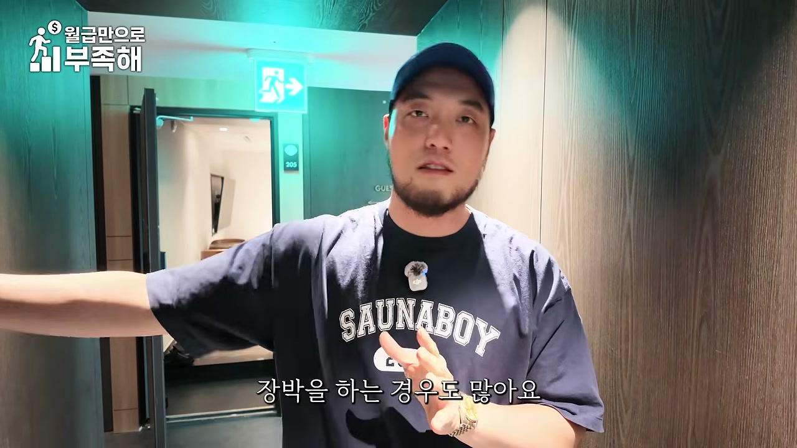
캡슐베드의 수익 계산은 이 영상에서 가장 임팩트 있는 숫자 중 하나다.
여기에 더해 3층 테라피샵이 월 6,000만 원이므로, 진행자는 "아까 테라피는 6,000, 여긴 1,800"이라고 정리한다.
캡슐 호텔의 수요 구조에 대해서도 설명이 이어진다.
조명 연출에 대해서도 언급된다. 진행자가 "조명도 뭔가 감성 있는 거 같아. 이것도 다 연출하신 거예요?"라고 묻자 대표는 "다 연출한 거고 이거는 심플해요. 편하게 휴식할 수 있는 공간을 만들 거잖아요. 그다음에 객실은 오히려 힘을 뺐어요"라고 답한다. 그 이유는 명확하다. 객실에 힘을 빼고 부대 공간에 투자해서, 고객이 부대 공간을 이용하도록 유도하는 경험 설계이기 때문이다. 실질적으로 객실은 심플하게, 객실 밖으로 나왔을 때는 훨씬 더 다양한 콘텐츠가 있는 구조가 이 호텔의 컨셉이며, 대표는 "이게 호스텔이에요"라고 규정한다.
객실로 이동하며 가장 먼저 소개되는 것은 배달 서비스다.
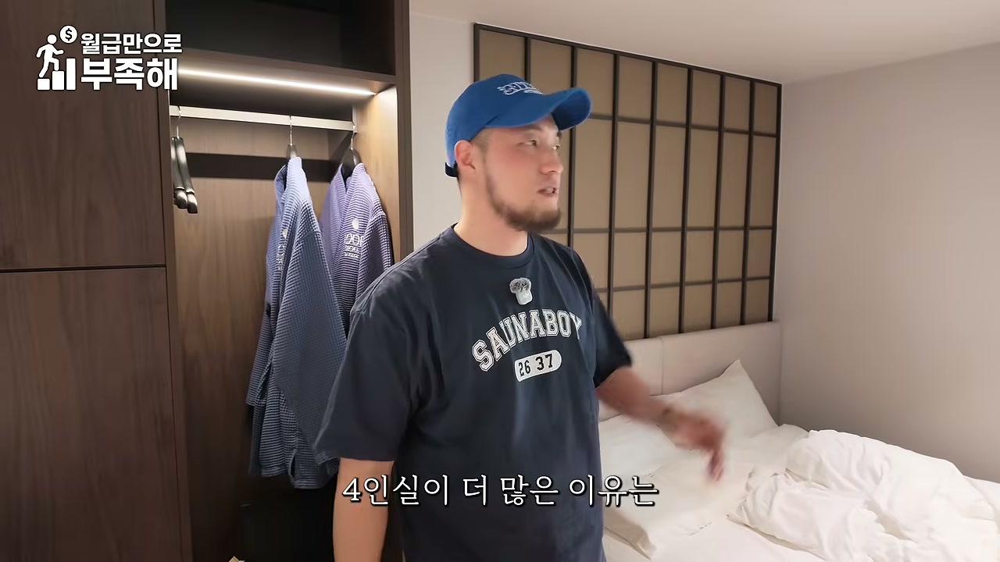
객실 구성의 특징도 설명된다.
4인실의 실제 모습에 대해서는 "넓죠", "호텔 같아요", "카메라에 좀 안 당길 수도 있는데 진짜 넓어요"라는 반응이 나온다. 또한 조도가 낮게 설계되어 있는데, 이는 "편안하게 휴식하는 호텔"이라는 컨셉에 따른 것이다. 4인실에는 더 좋은 블루투스 스피커가 들어가고, 배달도 가능하며, 세탁기도 설치되어 있다. 세탁기가 있는 이유는 장박 수요 때문이다.
강남 특유의 수요도 언급된다. 외국인 관광객 중에는 성형하러 오는 사람들이 있고, 이들은 한 군데서 연박을 하면서 회복 기간을 보낸다. 따라서 그런 역할까지 할 수 있는 객실이 필요하다. 진행자가 "호텔은 객실 내 세탁기가 들어갈 수 없지 않나요?"라고 묻자 대표는 "들어가도 상관은 없는데 잘 안 넣죠. 근데 우리는 장박을 만드는 거니까 세탁기도 집어넣고 싱크대도 만들어 놓고 이렇게 하는 거죠"라고 답한다. 즉 장박형 수요를 겨냥한 객실 설계가 일반 호텔과의 차이를 만든다.
여성 캡슐베드 구역에 대한 설명에서 대표의 원칙이 드러난다.
즉 같은 비용을 들이더라도 여성 고객의 경험을 우선 개선하는 것이 리뷰·입소문 측면에서 더 큰 효과를 낸다는 판단이다. 이는 앞서 언급된 "리뷰가 좋아지게 할 수 있냐"는 공용부 기준과도 연결되는 실무적 인사이트다.
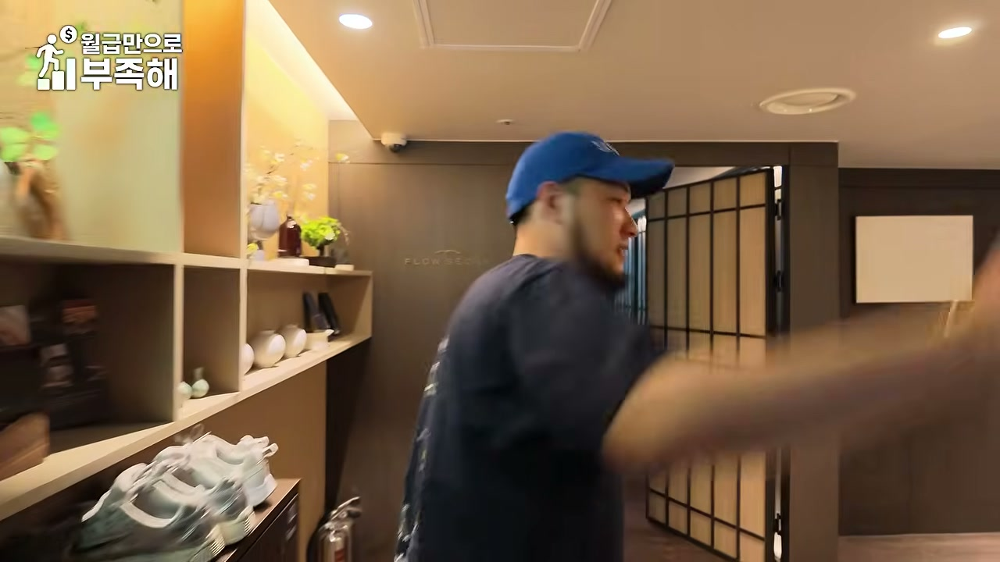
3층 테라피샵은 약 30평 규모로, 월 6,000만 원의 매출을 낸다. 진행자는 "진짜 고급 호텔 같다"고 반응한다. 이 사업의 배경 설명이 매우 구체적이다.
그래서 대표는 "나는 어느 정도 충분히 퀄리티가 있는 서비스를 받으면서도 가성비 있게 할 수 있는 걸 기획해야겠다"는 결론을 내리고 테라피 브랜드를 직접 만들었다. 그리고 이 공간에서 30평에 6,000만 원이라는 "압도적인 매출"을 만들어낸다.
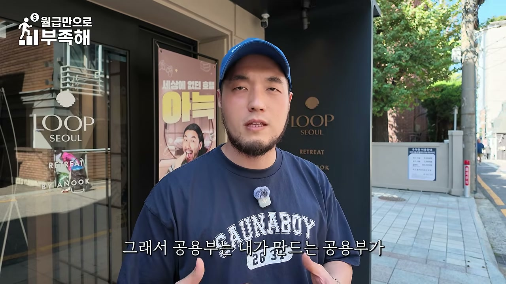
여기에 MD 시너지가 설계되어 있다.
진행자는 "약간 한 10만 원 더 써서 더 좋은 서비스를 받을 수 있게, 그게 그냥 자발적으로 가능하겠네요"라고 정리한다. 이는 부대시설끼리 서로의 매출을 끌어올리는 교차 판매 구조가 의도적으로 설계되었음을 보여준다.
진행자가 "처음 하시는 분들은 어떤 컨셉을 가지고 가는 게 좋을지" 묻자, 대표는 공용부 실패의 전형을 먼저 지적한다.
"대부분 많이들 실패하시는 게, 공용부를 만들 때 막 고객들이 잘 쉴 수 있는 라운지를 만들고, 뭐 카페를 만들고 이렇게 하시거든요. 근데 그러면은 실패할 가능성이 커져요."
그 이유는 공용부도 공사비는 객실과 똑같이 드는데, 객실이 아니니까 돈을 못 번다는 구조적 문제 때문이다. 그래서 공용부를 만들 때는 다음 네 가지 기준 중 하나를 확실히 충족하는지 확인해야 한다.
대표는 "네 가지 중에 하나가 엣지 있게 확실하게 포인트가 있지 않으면, 그 공용부는 만들어져 봤자 실패하는 공용부가 될 가능성이 있어"라고 단언한다.
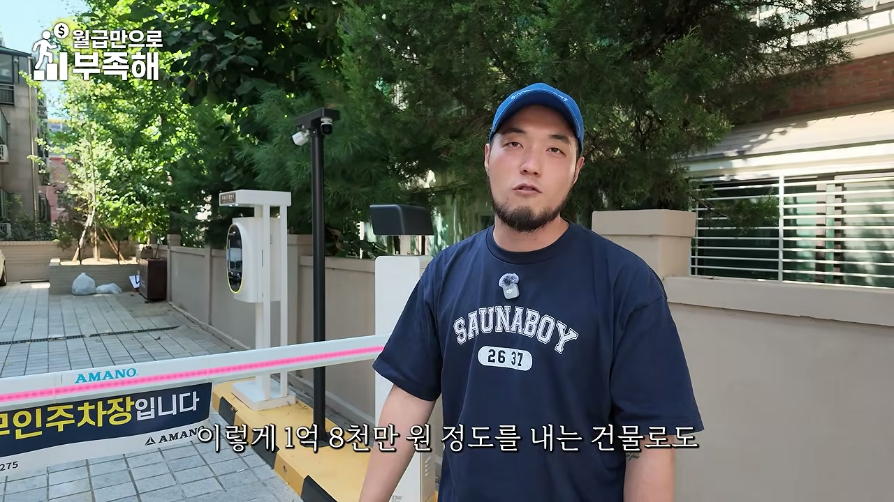
그리고 이 기준을 자기 호텔에 적용해 검증한다.
즉 공용부는 반드시 "확실한 이유 하나"가 명확해야 한다는 것이 정리다. 진행자가 "약간 돈을 벌 수밖에 없는 숙박시설의 구조를 만들어 버리신다"고 하자 대표는 "맞아요. 그런 계산이 없이 그냥 만들면 그냥 내가 만들고 싶은 거 만드는 거밖에 안 돼요"라고 답한다.
대표는 "이런 것도 큰 돈 들이지 않고 수익 쉐어 방식으로 설치해 놓잖아요"라며 주차장을 언급한다. 주차장에 차단기를 설치한 것만으로 하루 6만 원을 받을 수 있는 주차장이 된다. 진행자가 "아, 저 차단기 하나 때문에"라고 반응하자 대표는 이어서 공간 기획의 기본 원칙을 다시 강조한다.
"공간 계획의 기본은 이 공간을 최대한 돈 벌 확률을 높이게 하는 거. 그래서 전용평당 가장 많은 돈을 벌어내는 공간으로 바꾸는 거."
그 결과 같은 400평이라도 월 1억 원을 내는 건물을 만들 수도 있고, 1억 8,000만 원 정도를 내는 건물로도 만들 수 있다는 것이 이 프로젝트의 결론이다. 그리고 우선순위가 명시된다.
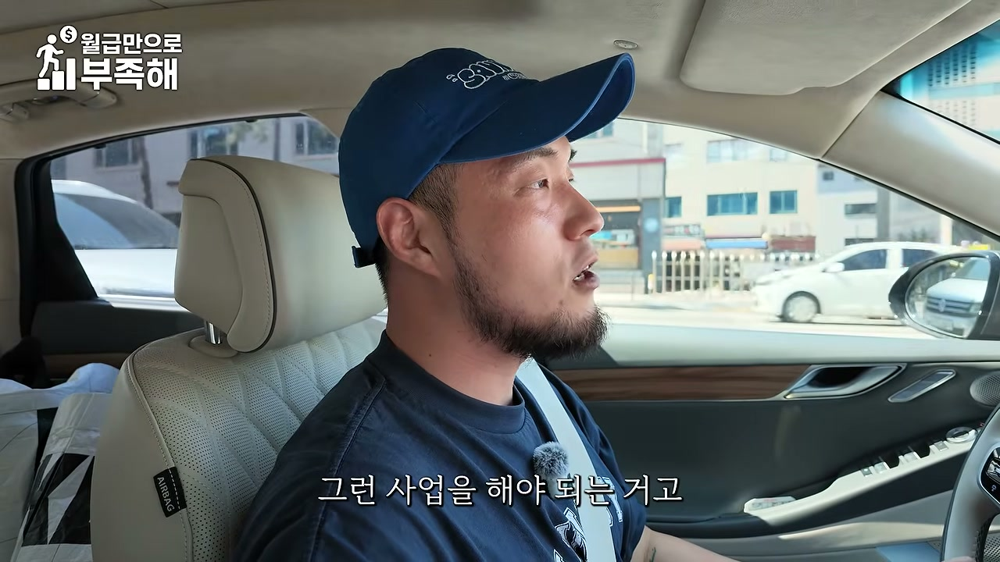
진행자가 "호스텔에도 성지 같은 데가 있다고 했는데 그게 종로라고 들었거든요. 맞나요?"라고 묻자 대표는 다음과 같이 답한다.
그러나 대표는 곧바로 함정을 지적한다. "많다고 다 좋은 게 아니고, 상권보다도 더 중요할 수 있는 게 그 건물의 수익성이에요." 종로라고 해서 건물이 다 똑같이 생기지 않았고, 결국 돈을 극대화할 수 있는 기본 하드웨어를 갖추고 있느냐를 잘 봐야 한다는 것이다. 즉 입지(상권)보다 건물 자체의 수익 잠재력이 더 중요할 수 있다는, 앞서 19번 항목의 우선순위와 일관된 주장이다.
진행자가 "서울은 외국인도 많고 내수 인원도 많을 텐데, 지방으로 가면 호스텔은 별로 안 되는 건가요?"라고 묻는다. 이에 대한 답은 조건부다.
진행자가 "그 기획 공식이 정확하게 어떤 거예요? 사례를 좀 들을 수 있는"이라고 요청하자 대표는 원칙을 제시한다.
"일반적으로 수도권에 나가거나 조금 더 다른 경쟁 호텔보다 차별화 포인트를 만들고 싶을 때는 남들이 안 하는 걸 좀 해야 되거든요. 남들이 안 하면서도 고객은 좋아하는 걸 해야 돼. 그거를 찾는 거를 저는 호텔에다가 많이 시도들을 해 봤을 거잖아요."
그 예시로 등장하는 것이 대표가 만든 패스포트 브랜드다. 진행자는 "구리에 만든 패스포트 에어플레인 같은 걸 보면"이라고 구체적 사례를 언급한다. 해당 시설은 "너무너무 낡은 여관"이고, 객실이 너무너무 협소해서 거의 고시원 크기라고 봐도 무방할 정도다. 즉 작은 객실을 키울 수는 없지만, 작은 객실인데도 비싼 돈을 받고 가치를 인정받게 만드는 방식이 필요하다는 문제의식이 제시된다. 이 대목은 영상이 2편으로 넘어가며 구체적인 해법으로 이어질 지점이다.
— 자본의 크기가 아니라 설계의 문제라는 이 영상 전체의 문제의식을 압축한 발언.
— 호스텔 붐의 구조적 원인을 한 문장으로 정리한 핵심 설명.
— 부동산 시장 사이클과 호스텔 전환의 인과관계를 설명하는 대목.
— "숙박업=건물" 통념을 깨는 결정적 문장.
— 호스텔 전대 모델의 출구 전략 두 가지.
— 이 영상에서 반복되는 핵심 원칙.
— 객실 수를 줄이고 부대시설을 키운 역삼 호텔의 의사결정 논리.
— 공용부 실패의 전형.
— 공용부 4원칙의 결론.
— 상권보다 건물 자체의 수익 잠재력이 중요하다는 주장.
— 차별화 포인트를 찾는 방법론.
1. 호스텔은 '건물 없는 숙박업'이라는 새로운 진입 경로다.
이 영상 1부의 가장 큰 메시지는 "숙박업을 하려면 건물을 지어야 한다"는 통념의 해체다. 호스텔은 관광숙박시설 중 용도변경이 가장 용이한 유형이기 때문에, 기존 근생·주택 건물을 임차해 전대하는 방식으로 소자본 진입이 가능하다. 두 객실만 있어도 성립하고, 시설투자 1억 원 규모로도 운영할 수 있으며, 월세 250만 원을 내고 월 450만 원의 현금흐름을 만드는 사례가 제시된다.
2. 수익의 원천은 '객실 수'가 아니라 '평당 매출 설계'다.
30객실을 채워 월 1억 원을 만드는 대신, 20객실로 줄이고 대욕장·캡슐베드·테라피샵·주차장을 결합해 월 1억 8,000만 원을 만드는 구조가 핵심 사례다. 7평 캡슐 12개가 월 1,800만 원, 30평 테라피샵이 월 6,000만 원, 차단기 하나가 하루 6만 원을 만든다. 즉 공간을 '용도'가 아니라 '수익 단위'로 쪼개서 배치하는 사고방식이 이 사업의 본질이다.
3. 부대시설은 반드시 검증 가능한 이유가 있어야 한다.
공용부 4대 기준(객단가 상승·자체 매출·인지도·리뷰)은 이 영상에서 가장 실무적으로 바로 적용 가능한 프레임워크다. "라운지나 카페를 만들면 좋겠지"라는 감성적 접근은 공사비만 객실과 동일하게 쓰고 매출은 없는 실패 공용부가 된다. 대욕장은 객단가, 테라피샵은 자체 매출, 엘리베이터·향·조도는 리뷰와 인지도에 각각 대응시켜 설계되었다는 점이 모범 사례다.
4. 호스텔 붐은 부동산 사이클의 산물이므로 사이클을 읽어야 한다.
임차시장 약세 + 주택 세부담 → 숙박 전환 수요 증가 → 호스텔 신규 170개(2년 대비 10배)라는 인과가 제시된다. 즉 지금이 진입 적기일 수 있으나, 향후 월세 시장이 회복되면 판도가 바뀔 수 있다는 조건부 전망도 함께 기억해야 한다. 시장의 구조적 방향과 개별 건물의 수익성을 분리해서 봐야 한다는 것이다.
5. 입지 선정과 공간 기획이 투자의 순서다.
대표는 우선순위를 명확히 한다. ① 건물 매수와 입지 선정, ② 공간의 밸류애드(기획)와 시공. 그리고 상권보다 건물 자체의 수익 잠재력(하드웨어)이 더 중요할 수 있다고 말한다. 종로가 호스텔의 성지인 이유(외국인 수요, 넓은 상업지, 완화된 기준)는 분명하지만, "많다고 다 좋은 게 아니다"라는 단서가 붙는다.
6. 향후 전개(2부 예고)에 대한 기대 지점.
이 파트는 "작은 객실인데도 아주 비싼 돈을 받고…"라는 문장에서 끊기며, 구리 지역의 낡은 여관을 개조한 '패스포트 에어플레인' 사례가 다음 파트의 주제로 예고된다. 즉 2부에서는 협소한 객실을 어떻게 고부가가치 공간으로 전환하는지, 그리고 수도권·지방에서의 호스텔 기획 공식이 구체적으로 다뤄질 것으로 예상된다. 1부가 '구조와 원칙'이었다면 2부는 '실전 사례'에 해당한다.
댓글
GitHub 이슈 기반 댓글 시스템입니다.